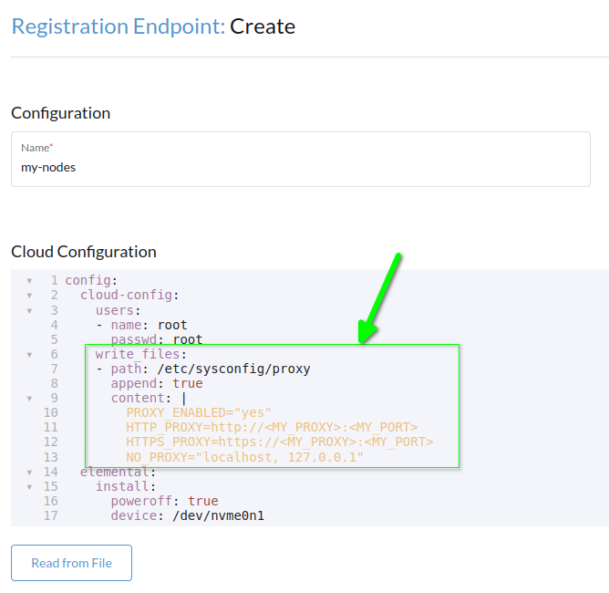
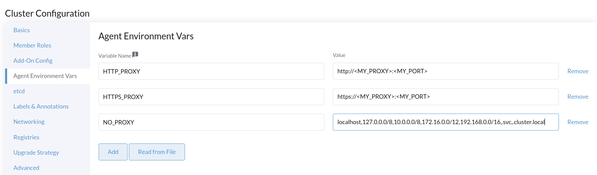

|
本文档采用自动化机器翻译技术翻译。 尽管我们力求提供准确的译文，但不对翻译内容的完整性、准确性或可靠性作出任何保证。 若出现任何内容不一致情况，请以原始 英文 版本为准，且原始英文版本为权威文本。 |
通过代理
在许多企业环境中，运行在本地的服务器或虚拟机没有直接的互联网访问。相反，出于安全原因，连接外部服务是通过 HTTP(S) 代理进行的。本教程将向您展示如何在这样的环境中设置 SUSE® Rancher Prime: OS Manager 部署。
|
本指南不涵盖在代理后安装 Rancher。这是一个不同的用例，您可以在 在 HTTP 代理后安装 SUSE Rancher Prime 页面找到详细文档。 |
|
在本文档中，我们假设您使用的是 SUSE 家族系统（如 SLE Micro），因此代理设置必须写入 |
代理设置必须在以下位置配置：
-
机器注册端点
-
SeedImage 资源
-
SUSE® Rancher Prime: OS Manager 集群配置
elemental-system-agent 需要代理设置以访问 Rancher 管理器。
为此，您需要填写机器注册端点的 cloud-init 部分。
-
CLI
-
UI
apiVersion: elemental.cattle.io/v1beta1
kind: MachineRegistration
metadata:
name: my-nodes
namespace: fleet-default
spec:
config:
cloud-config:
write_files:
- path: /etc/sysconfig/proxy
append: true
content: |
PROXY_ENABLED="yes"
HTTP_PROXY=http://<MY_PROXY>:<MY_PORT>
HTTPS_PROXY=https://<MY_PROXY>:<MY_PORT>
NO_PROXY="localhost, 127.0.0.1"
users:
- name: root
passwd: root
elemental:
install:
reboot: true
device: /dev/sda
debug: true
registration:
emulate-tpm: true
SUSE® Rancher Prime: OS Manager-注册
SUSE® Rancher Prime: OS Manager-注册 是新主机与 Rancher 管理器之间的第一个通信端点，这是需要设置代理设置的第一个地方。
|
在撰写本文时，仅可以通过 CLI 为 ISO 配置代理设置。UI中未实现代理设置。 |
该过程发生在您第一次启动 SUSE® Rancher Prime: OS Manager ISO 时，为了配置代理设置，您必须在 ISO 中包含 cloud-init 定义。
要做到这一点，您必须创建一个 SeedImage 定义。
apiVersion: elemental.cattle.io/v1beta1
kind: SeedImage
metadata:
name: ...
namespace: ...
spec:
baseImage: registry.suse.com/suse/sle-micro-iso/5.5:2.0.2
cloud-config:
write_files:
- path: /etc/sysconfig/proxy
append: true
content: |
PROXY_ENABLED="yes"
HTTP_PROXY=http://<MY_PROXY>:<MY_PORT>
HTTPS_PROXY=https://<MY_PROXY>:<MY_PORT>
NO_PROXY="localhost, 127.0.0.1"
registrationRef:
apiVersion: elemental.cattle.io/v1beta1
kind: MachineRegistration
name: ...
namespace: ...应用带有 kubectl 的 YAML，然后打印您的 SeedImage 定义以获取下载 URL：
kubectl apply -f <my_seedimage_yaml_file>
kubectl get seedimage <seed_image_name> -n <namespace> -o yaml启动 ISO，您应该会看到您的新系统出现在 Machine inventory 中。
创建 SUSE® Rancher Prime: OS Manager 集群
在此步骤中，您可以使用 UI 或 CLI。
-
CLI
-
UI
kind: Cluster
apiVersion: provisioning.cattle.io/v1
metadata:
name: my-cluster
namespace: fleet-default
spec:
agentEnvVars:
- name: HTTP_PROXY
value: http://<MY_PROXY>:<MY_PORT>
- name: HTTPS_PROXY
value: https://<MY_PROXY>:<MY_PORT>
- name: NO_PROXY
value: localhost,127.0.0.0/8,10.0.0.0/8,172.16.0.0/12,192.168.0.0/16,.svc,.cluster.local
rkeConfig:
machineGlobalConfig:
etcd-expose-metrics: false
profile: null
machinePools:
- controlPlaneRole: true
etcdRole: true
machineConfigRef:
apiVersion: elemental.cattle.io/v1beta1
kind: MachineInventorySelectorTemplate
name: my-machine-selector
name: pool1
quantity: 1
unhealthyNodeTimeout: 0s
workerRole: true
machineSelectorConfig:
- config:
protect-kernel-defaults: false
registries: {}
kubernetesVersion: v1.24.8+k3s1